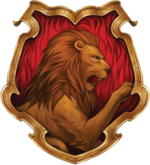
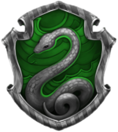
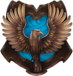
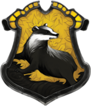

Хогвартс
Hogwarts School of Witchcraft and Wizardry — учебное заведение волшебников, живущих в Великобритании и Ирландии.
Гриффиндор

Гриффиндор — отличительные качества учеников этого факультета: храбрость, честь, благородство. Талисман — лев, цвета — алый и золотой. Декан — преподаватель трансфигурации Минерва Макгонагалл. Привидение — Почти Безголовый Ник. Основатель — Годрик Гриффиндор. Согласно Роулинг, Гриффиндор соответствует стихии огня.
Слизерин

Слизерин — ценит хитрость, честолюбие, решительность, находчивость. Книга также позволяет предположить, что для слизеринцев характерна жажда власти. Салазар Слизерин также определял учеников чаще по чистоте крови. Талисман Слизерина — змея, цвета — зелёный и серебристый. Декан — Северус Снегг, профессор зельеварения. Согласно Роулинг, Слизерин соответствует стихии воды.
Когтевран

Когтевран — ценит ум, творчество, остроумие и мудрость. Популярная когтевранская пословица гласит: «ума палата дороже злата». Талисман — ворон, цвета — синий и бронзовый. Декан — профессор заклинаний Филиус Флитвик. Привидение — Серая Дама, Елена Когтевран, дочь Кандиды. Основатель — Кандида Когтевран. Когтевран соответствует стихии воздуха.
Пуффендуй

Пуффендуй — ценит трудолюбие, верность и честность. Талисман — барсук, цвета — канареечно-жёлтый и чёрный. Декан — преподаватель травологии Помона Стебль. Привидение — Толстый Монах. Основатель — Пенелопа Пуффендуй. Согласно Роулинг, Пуффендуй соответствует стихии земли. Факультет находится в подземельях.